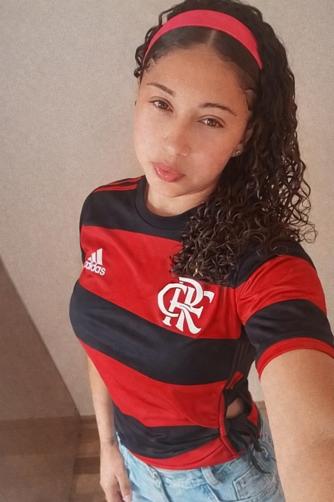
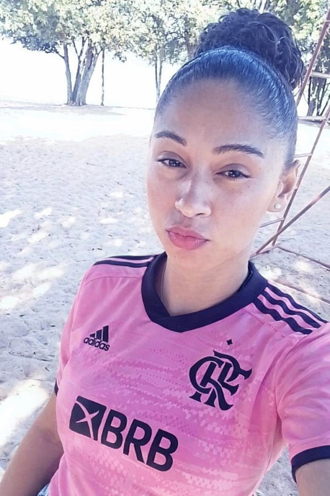

Thaís, A Flamenguista!
Era uma vez a THAIS, conhecida no bairro como “FlaThais”, o único ser humano oficialmente diagnosticado com Flamenguismo Agudo em Estágio Avançado™.
Desde pequeno ela não chorava… ela cantava o hino do Clube de Regatas do Flamengo.
Se caía da bicicleta:
— “Uma vez Flamengo, sempre Flamengo…” 🎶
Se tirava nota baixa:
— “Foi culpa do VAR!”
O QUARTO DA THAIS
🔴⚫ O Quarto da THAIS parecia um museu: 47 camisas do Flamengo 12 bandeiras 3 pôsteres do Zico 1 vela “aromatizada” com cheiro de Maracanã Ela acordava todo dia gritando: — “HOJE TEM MENGÃO!” Mesmo sendo terça-feira… sem jogo… em abril… contra ninguém.
UM DIA NO SUPERMERCADO
🏟️ O Delírio Máximo Certo dia ela foi ao supermercado. A moça perguntou: — CPF na nota? THAIS respondeu: — “Coloca na conta do Clube de Regatas do Flamengo que é líder!” Ela só queria o CPF.
TÍTULO 2019
📺 A Fase Crítica Depois da Libertadores de 2019, THAIS passou 6 meses assistindo replay do gol do Gabigol. Ela sabia o minuto, o segundo e até a respiração do narrador. Se alguém falava “2 minutos”, ela respondia: — “Tempo suficiente pra virar jogo!”
😵💫 O Diagnóstico Final
🏆 Moral da História
THAIS pode esquecer aniversário da mãe. Pode esquecer senha do banco. Pode esquecer onde deixou a bicicleta. Mas ela nunca esquece: Contra o Flamengo é sempre decisão.

Em dia de jogo, o comportamento muda. Ela entra em modo concentração. Não atende ligação. Não responde mensagem. Não existe mundo. Se o Flamengo faz gol, ela grita tão alto que o vizinho já sabe o placar antes da transmissão mostrar.
Quando o Flamengo perde… é luto oficial. Foto de perfil preta. Status misterioso: “Deus sabe de todas as coisas.” Quem não conhece acha que aconteceu uma tragédia nacional.
Ela já disse frases como:
Momentos Com o Manto
UM DIA NA PRAIA
Lá estava ela… na praia, sol de 40 graus, vento batendo, todo mundo de biquíni, sunga, roupa leve… e a criatura aparece COMO? Com uma camisa rosa do Mengo 🤦♂️ Mas não é qualquer camisa não. É aquela rosa choque, brilhando mais que o reflexo do sol no mar. De longe eu achei que era boia de flamingo perdida na areia. Quando chegou perto… era só ela mesmo, dizendo: — “Eu nem sou tão flamenguista assim…” CLARO. Imagina. A pessoa vai pra praia e leva o quê? Protetor solar? Canga? Óculos escuros? Não. Ela leva a camisa do Mengão versão Barbie edição especial. O mais engraçado é que ela tenta disfarçar: — “Ah, eu só peguei essa porque tava limpa.” Limpa? Coincidência a ÚNICA limpa ser justamente a do Mengo? 🤨 E ela ainda senta na areia toda plena, como se estivesse no camarote do Clube de Regatas do Flamengo no Maracanã. Só faltou começar a cantar “Meeeengo!” quando o vendedor de picolé passou. Na hora da foto então… postura séria, mão na cintura, camisa esticada pra aparecer bem o escudo. Diz que não liga, mas ajeitou a camisa três vezes antes da selfie. E quando alguém perguntou: — “Tu torce mesmo pro Flamengo?” Ela respondeu toda falsa modesta: — “Ah… eu simpatizo.” Simpatiza nada. Se tivesse jogo ali na areia, ela ia organizar torcida com guarda-sol vermelho e preto. Resumo da história: A pessoa diz que não é fanática… mas vai pra praia uniformizada. Isso não é torcer. Isso é viver em modo Flamengo 24 horas por dia 😂
